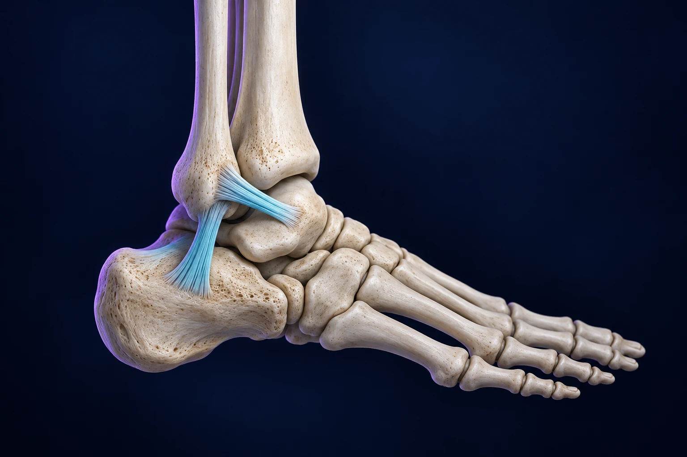

Cheville qui se dérobe : quand envisager une ligamentoplastie ?

Une stabilisation chirurgicale de la cheville peut être discutée lorsque des dérobements et des entorses répétées persistent malgré une prise en charge adaptée. Le mot « ligamentoplastie » recouvre parfois plusieurs interventions : réparer les ligaments existants et les reconstruire avec un tendon sont deux possibilités différentes. Le choix dépend de l’examen, de la qualité des tissus et des éventuelles lésions associées.
L’objectif de cet article est de comprendre cette décision et ses suites. Il complète les explications sur la récupération après une entorse de cheville, sans remplacer le bilan individuel réalisé en consultation.
Pourquoi la cheville continue-t-elle à se dérober ?
Après une entorse, certaines personnes décrivent une cheville qui « part » sur les terrains irréguliers ou lors des changements de direction. Les ligaments externes peuvent être distendus ou lésés. Mais la stabilité dépend aussi de la force musculaire, de l’équilibre et de la capacité à percevoir la position de l’articulation, appelée proprioception.
On peut comparer cet ensemble à un système de haubans associé à des capteurs : restaurer la solidité des attaches ne dispense pas de réentraîner le contrôle du mouvement. C’est pourquoi une rééducation adaptée constitue une étape centrale, y compris quand une opération sera finalement retenue. HAS, entorse latérale de cheville : rééducation et reprise d’activité.
Une douleur persistante suffit-elle à décider d’opérer ?
Non. Une douleur et une instabilité ne désignent pas nécessairement le même problème. Une gêne peut aussi provenir du cartilage, d’un conflit dans l’articulation, de tendons voisins ou d’une arthrose. Stabiliser les ligaments ne corrige pas automatiquement chacune de ces causes. Il faut donc préciser ce que l’intervention cherche à améliorer et quelles douleurs pourraient persister.
Le récit des dérobements, l’examen et l’imagerie se complètent. Le compte rendu d’une IRM, pris isolément, ne suffit pas à choisir l’opération. Décrivez les circonstances concrètes : trottoirs, randonnée, course, sport de pivot ou activité professionnelle. Ces exemples aident à distinguer une appréhension, un manque de contrôle et une laxité ligamentaire. Royal Berkshire NHS, réparation ou reconstruction des ligaments latéraux.
Quelle différence entre réparation et reconstruction ?
Lorsque les tissus le permettent, une réparation de type Broström consiste à retendre ou à réinsérer les ligaments existants. Une variante, dite Broström-Gould, associe un renforcement avec des tissus voisins. Des ancrages peuvent servir à fixer les ligaments à l’os. Il s’agit de restaurer les structures présentes, et non nécessairement de les remplacer par un tendon. Royal Orthopaedic Hospital, réparation de Broström.
Dans d’autres situations, une reconstruction utilise un greffon tendineux pour recréer les attaches ligamentaires. Elle peut être envisagée notamment lorsque la qualité des tissus ne permet pas une réparation suffisante. Le terme employé sur un devis ou un compte rendu mérite donc d’être expliqué : demandez quels ligaments seront concernés et avec quels tissus. Royal National Orthopaedic Hospital, chirurgie des ligaments latéraux de cheville.
Faut-il également une arthroscopie ?
Une arthroscopie peut être associée au geste ligamentaire pour examiner l’intérieur de l’articulation et traiter certaines lésions identifiées. Elle n’est pas synonyme de reconstruction et n’est pas systématiquement nécessaire. Une lésion cartilagineuse, par exemple, peut influencer l’intervention et les suites. C’est le bilan complet qui guide la proposition. Royal Berkshire NHS, principes de la stabilisation chirurgicale.
En consultation, vous pouvez demander un schéma simple de votre cheville : où se situe l’instabilité, quels gestes sont prévus et quelle partie des symptômes chacun doit traiter ? Cette discussion permet de comprendre une proposition parfois désignée par plusieurs noms techniques.
Comment organiser le retour à domicile ?
Une protection par botte ou immobilisation peut être nécessaire. Les autorisations d’appui varient selon la technique, les gestes associés et les consignes du chirurgien. Ne transposez pas le calendrier d’un proche à votre situation. Demandez une consigne écrite indiquant ce qui est autorisé, avec quelle aide et jusqu’à quel contrôle. Royal National Orthopaedic Hospital, préparation et suites de l’intervention.
Prévoyez les déplacements, les escaliers, les courses et l’aide disponible. Signalez l’ensemble de vos traitements à l’équipe ; ne les interrompez pas de votre propre initiative. Pour la conduite et le travail, décrivez vos contraintes réelles : rester assis, marcher toute la journée et travailler sur un chantier ne demandent pas les mêmes capacités.
Quand reprendre le sport ?
Le retour aux activités progresse avec la cicatrisation, la mobilité, la force et le contrôle de la cheville. Le kinésithérapeute accompagne cette progression selon le protocole transmis. Une articulation moins douloureuse n’est pas nécessairement prête à supporter les réceptions de saut ou les changements de direction. Royal Orthopaedic Hospital, récupération après réparation ligamentaire.
La reprise sportive doit aussi intégrer les exigences de votre discipline et la confiance dans l’appui. Un programme individualisé est plus utile qu’une date unique annoncée avant même l’examen. L’objectif est de retrouver progressivement les capacités nécessaires, puis de vérifier leur utilisation dans les mouvements concernés. HAS, retour à l’activité après entorse de cheville.
Quels points aborder avant de décider ?
La discussion comprend les risques de cicatrisation, d’infection, de troubles sensitifs, de raideur et de persistance de symptômes. Une stabilisation ne garantit pas la disparition de toute douleur. Demandez les signes à signaler rapidement et le numéro à contacter après votre sortie. Royal National Orthopaedic Hospital, bénéfices et risques.
Pour votre rendez-vous, apportez les examens disponibles et précisez la rééducation déjà effectuée, les épisodes de dérobement et les activités limitées. Le Dr François Lozach à Sète pourra discuter avec vous de la place des traitements et des objectifs d’une éventuelle intervention.
Ces conseils sont d’ordre général et ne remplacent pas un avis médical personnalisé.